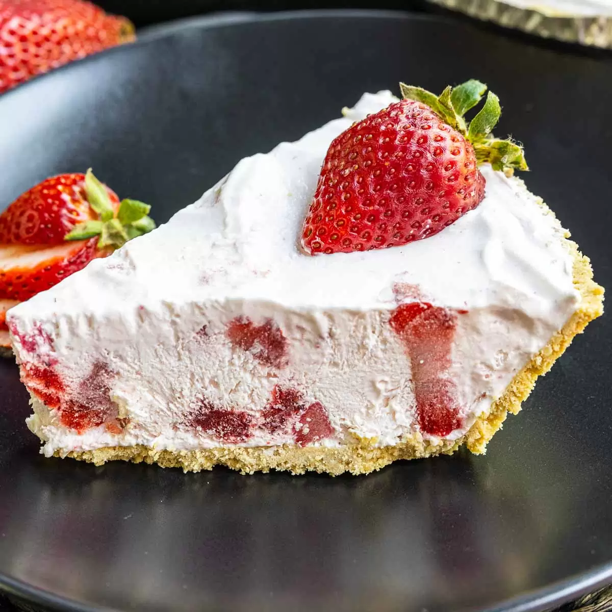

Sush's Frozen Strawberry Pie

Ingredients:
Crust:
- 4 tablespoons (1/2 stick) unsalted butter, melted, plus additional for greasing
- 1 1/2 cups graham cracker crumbs (from about 10 full sheets of graham crackers)
- 2 tablespoons granulated sugar and 1/2 teaspoon ground ginger
Filling:
- 2 cups heavy cream 4 ounces cream cheese, softened
- 1 (14-ounce) can sweetened condensed milk 2 large lemons, 1 zested, both juiced
- 1 teaspoon kosher salt 1 pint raspberries, lightly crushed
Topping:
- 1 pint strawberries, hulled and quartered
- 1 tablespoon dark brown sugar
- 1 teaspoon apple cider vinegar
Directions:
- For the crust: Preheat the oven to 350 degrees F. Butter the bottom and sides of a 10-inch pie dish and set side.
In a medium bowl, combine the graham cracker crumbs, granulated sugar, ginger and melted butter. The texture should resemble wet sand. Press the crumbs into an even layer in the bottom and up the sides of the pie dish. Use the bottom of a measuring cup or glass to pack the bottom crust firmly. Bake until the crust firms up and browns lightly, 10 to 12 minutes. Remove from the oven and set aside on a rack to cool completely.
- For the filling: In the bowl of an electric mixer fitted with the whisk attachment, whip the heavy cream to stiff peaks. Transfer to a medium bowl and refrigerate.
- To assemble: Spoon the filling into the completely cooled crust. Freeze the pie for at least 6 hours, up to 12 hours.
- For the topping: In a medium bowl, toss the strawberries with the brown sugar and vinegar. Remove the pie from the freezer, top with the strawberry mixture and serve.